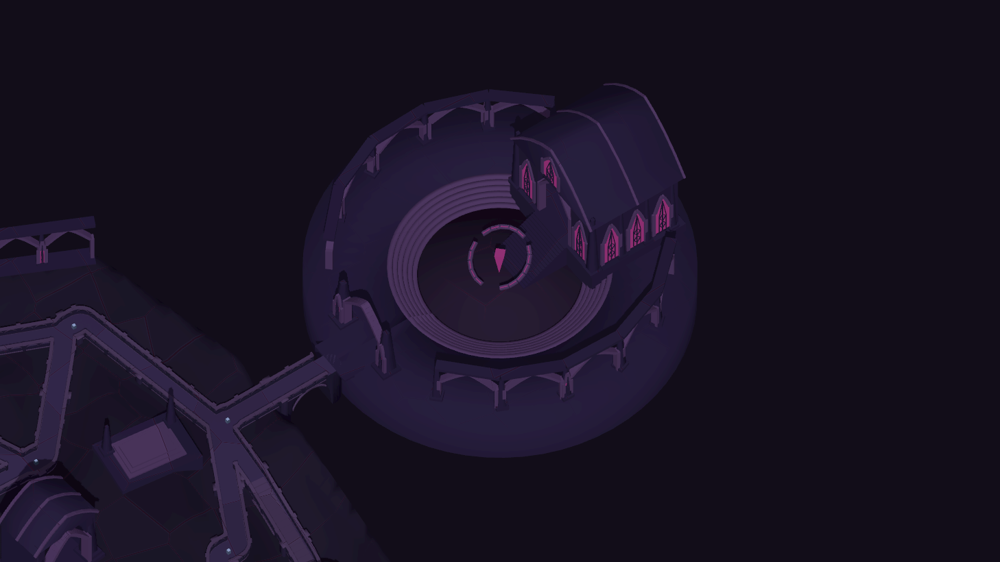
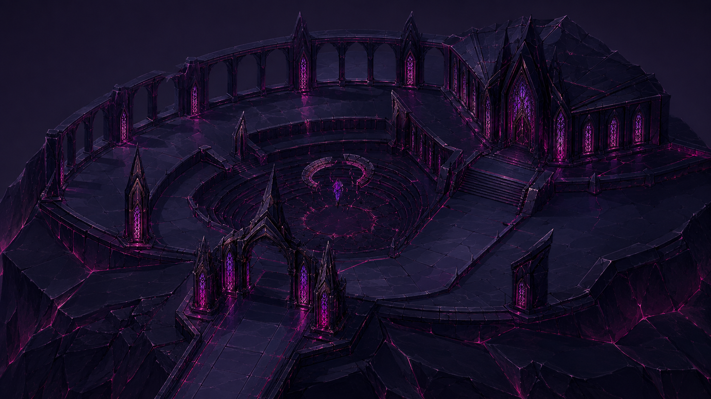

An intact court, a lowered audience chamber and a raised sovereign hall. The architecture remains whole; only the suspended halo is fragmented.

A slow-moving halo and a suspended violet crystal above the empty audience court.
Pointed openings, broad tapering supports, a continuous gallery and a complete faceted vault. The main precinct connects to the boss waystone.
Empty ceremonial platforms, short galleries and broad boundary guards give the route a sense of scale. Dark slabs keep the brighter windows and waystones distinct.

Capture provenance · Geometry checks · Phone controls · Tablet controls · Film provenance